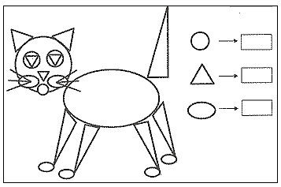
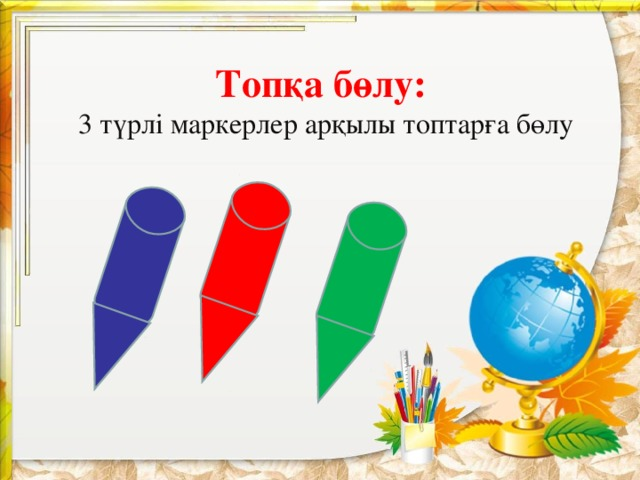
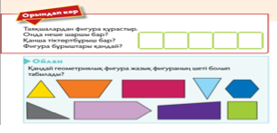
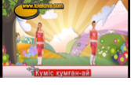
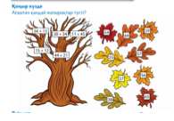
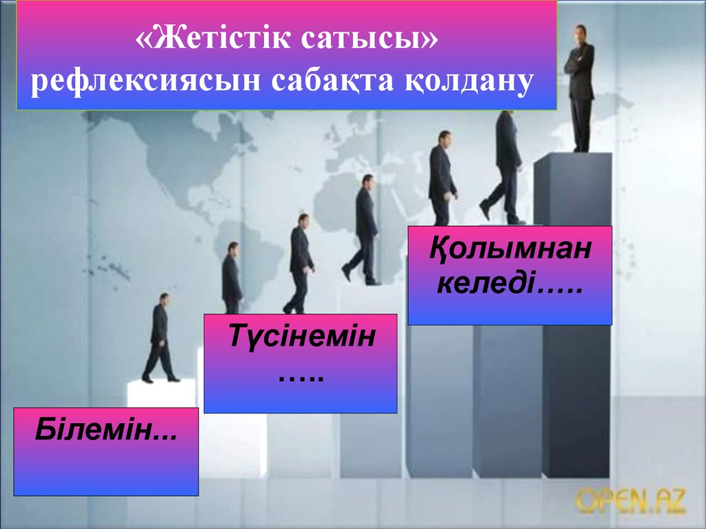

Сауран ауданы «Бабайқорған» жалпы орта мектебінің бастауыш сынып мұғалімі Асетова Перизат Тауасарқызына бастауыш сыныпқа даярлаған «Математика және логика» атты
таңдау курсына жазылған
Пікір
Бұл ұсынылып отырған авторлық жұмысы математика пәнін тереңдетіп оқытуға және оқушылардың танымдық, шығармашылық, зияткерлік, логикалық ойлау қабілеттерін дамытуға, білімдерін шыңдауға бағытталған құрал. Ұстаз «Математика және логика» таңдау курсы бойынша алған білім-білік дағдыларын тәжірибе жүзінде қолдана білуге, оқушылардың есептеу шапшаңдығын арттыру мақсатында тестлер мен логикалық тапсырмалар ұсынған. Математика пәнін тереңдетіп, әр тақырыпқа сай тест тапсырмаларын орындау арқылы оқушылардың әр тарау бойынша алған білімдерін тексеріп тиянақтайды. Тестні және логикалық тапсырмаларды орындай отырып математикалық сауаттылығы қалыптасады. Ой-өрісін, жан-жақты білімдерін кеңейтіп, өз бетімен жұмыс істеуге, қабілетін дамытып, тапқырлыққа тәрбиелейді. Математиканы өмірмен байланыстырып, алған білімдерін күнделікті өмірде қолдана білуге үйренеді.
Бастауыш сынып мұғалімі өз білімін шеберлікпен көрсетіп, сауатты жаза білген. Бұл жұмыс қазіргі жаһандану дәуірінде жаңартылған білім мазмұнына сай, оқушыларды шығармашылықпен жұмыс жасауға, жеке тұлға болып қалыптасуына, зияткерлік, интелектуалдық қабілетін қалыптастыру, ізденімпаздыққа тәрбиелеу мақсатында жүйелі, оқушылардың жас ерекшеліктеріне сай құрылған. Айтарлықтай ескертулер жоқ. Сондықтан бұл курсты мектепте қолдануға болады.
Қ.А. Ясауи атындағы Халықаралық
қазақ – түрік университетінің доценті Б.Н. Ауезов
Сауран ауданы «Бабайқорған» жалпы орта мектебінің бастауыш сынып мұғалімі Асетова Перизат Тауасарқызына бастауыш сыныпқа даярлаған «Математика және логика» атты
таңдау курсына жазылған
Пікір
Бұл авторлық жұмыста бастауыш сынып мұғалімі Асетова Перизат «Математика және логика» таңдау курсы бойынша математика пәнін тереңдетіп оқытуға бағыттап жазған. Бұл жұмыс оқушылар мен ұстаздарға көп көмегі тиетін әдістемелік құрал болып табылады. Оқушылар математика пәнінен берілген кез-келген есептерді, логикалық тапсырмаларды шапшаң есептеп үйренеді. Оқушылардың ойлау қабілеттерін дамытуға бағытталған тестлер мен тапсырмалар түрлерін енгізген.
Математика таңдау курсы арқылы оқушылардың әр тарау бойынша алған білім, білік дағдыларын тексеріп, білімдерін тиянақтайды. Ой-өрісін, жан-жақты білімдерін кеңейтіп, өз бетімен жұмыс істеуге, қабілетін дамытып, тапқырлыққа тәрбиелейді. Математиканы өмірмен байланыстыру арқылы білімдерін күнделікті өмірде қолдана білуге үйренеді.
Жалпы фигуралардың периметрін, ауданын табуға арналған формулалар құрастырып, оны оқушыларға қажетті мәлімет ретінде ұсынған. Оқушылар бұл материалды күнделікті сабақта қолдана алады.
Оқушылардың жас ерекшеліктеріне сай жүйелі жазылған. Ескертулер жоқ. «Математика және логика» таңдау курсын мектепте өтуге болады
Сауран ауданы білім бөлімінің
бастауыш сыныптар әдіскері: Д. Есенғараева
Сауран ауданы «Бабайқорған» жалпы орта мектебінің бастауыш сынып мұғалімі Асетова Перизат Тауасарқызына бастауыш сыныпқа даярлаған «Математика және логика» атты
таңдау курсына жазылған
Пікір
Бұл авторлық жұмыста бастауыш сынып мұғалімі Асетова Перизат «Математика және логика» таңдау курсын тереңдетіп мектепте оқытуға және оқушылардың функционалдық сауаттылығын арттыру, логикалық ойлау қабілеттерін дамытуға бағытталған тапсырмалар түрлерін құрастырған. Қазіргі жаңартылған білім мазмұнына сай «Математика және логика» таңдау курсы арқылы оқушылардың математикалық сауаттылығын дамытып, әр тарау бойынша алған білім, білік дағдыларын жетілдіріп, білімдерін тиянақтауға бағытталған құрал. Тестні және логикалық тапсырмаларды орындау арқылы жан-жақты білімдерін кеңейтіп, өз бетімен жұмыс істеуге дағдыланып, тапқырлыққа үйренеді. Математикалық есептеулерді күнделікті өмірмен байланыстырып, қолдана білуге дағдыланады.
Қосымша жазықтық фигуралардың периметрін, ауданын табуға арналған формулалар құрастырып, күнделікті сабақта қолдануды ұсынған. Шапшаң есептеуге, тапқырлыққа, алғырлыққа, зеректікке үйренеді, қосымша көмекші құрал ретінде қолдануға болатыны туралы тереңнен зерделеп жаза білген. Жұмысында кемшілік жоқ. Қорғауға жіберуге болады. Өте жақсы деп бағалаймын.
Директордың оқу ісі жөніндегі орынбасары: Н. Ильясова
Түсінік хат.
Бүгінгі таңда бұл бағдарлама дамыған өркениетті мемлекетіміздің хал –ахуалын, өмірін математиканың практикалық маңызын, оның күнделікті тұрмыстағы, ғылым мен техникадағы рөлін терең түсінуге көмектеседі. Сонымен қатар мектептегі оқу процесінің негізгі мақсаты – оқушылардың шығармашылық ойлауын дамыту, ғылыми көзқарасы мен белсенділігін қалыптастыру, өз бетінше білім алу, зерттеушілік, коммуникативтілік құзыреттілігінің дамуына негіз салу болып табылады.
Оқушылар өздерінің күнделікті өмірлік қажеттіліктерін қанағаттандыру мәселесіне байланысты сұрақтардың жауабын алуға мүмкіндік табады, пәнге қызығушылығын, логикалық ойлауын дамыту, білім сапасын арттыру үшін маңызы өте зор. Осыған байланысты қызықты математиканы оқытудың әдістемелік нұсқаулары берілген. Сол үшін оқушыларға «Математика және логика» курсы ұсынылады.
Тақырыбы: Математика және логика
Бағыты: Математика және техника
Өзектілігі :
Оқушылардың логикалық есептеу біліктілігі мен функционалдық сауаттылығын қалыптастыру үрдісінде өзін-өзі бақылай алуға үйретудің аздығы, негізгі математикалық сауаттылықты қалыптастырудағы кемшіліктерді жою.
Жаңалығы: Оқушылардың математикалық және функционалдық сауаттылығын, зияткерлік және логикалық ойлау қабілетін дамыту, алған білімін өмірде қолдана білу.
Педагогикалық мақсаттылығы: Ұстаздар мен оқушыларға әдістемелік құрал ретінде ұсыну.
Мақсаты:
Оқушылардың жалпы математикалық сауаттылық деңгейлерін көтеру, шығармашылық және практикалық мүмкіндіктерін ашу, дамыту. Математика пәнін тереңдетіп оқытуға және оқушылардың танымдық, шығармашылық қабілеттерін дамытуға, логикалық ойлау қабілеттерін дамытуға, білімдерін шыңдауға бағытталған.
Mіндеттері:
-оқушылардың функционалдық сауаттылығын қалыптастыру; -түрлі тапсырмаларды орындауда өмірмен байланыстыра отырып, алған білімін күнделікті өмірде қолдана білуге тәрбиелеу; -логикалық әртүрлі есептердің шешу жолдарын талдау, дәлелдей білу, өз бетімен жұмыс істеу қабілетін дамыту, тапқырлыққа тәрбиелеу.
Ерекшелігі: Оқушылардың логикалық ойлау қабілетін дамытуға арналған әдістемелік құрал.
Күтілетін нәтиже:
Оқушылар есептерге талдау жасауды, шығаруды, жоспарын құруды, қорытынды жасауды үйренеді; Байқағыштыққа, тапқырлыққа берілген есептерді, логикалық есептерді шешуді үйренеді; Өз бетімен және ұжымда жұмыс істеуге қалыптасады; Математикалық ой-өрісі кеңейеді, білімі артады; Қосымша әдебиеттермен жұмыс істеуге үйренеді;
Математика пәнін оқыту үдерісінде жаңаша белсенді оқыту әдістерін қолдану: -Жұптық; -Топтық; – практикалық; -Ойындар -Сұрақ-жауап: - шығармашылық жұмыс, интеллектуалдық сайыстар
-ұжымдық оқыту әдістері, -зерттеу
І. Курс мазмұндық бөлімі
Курс мазмұны.
Қазақстан Республикасының білім беру саясатын айқындайтын мемлекеттік құжаттарда «Білім заңы», «Білім стандарты» т.б оқыту үрдісін дамытушылық сипатта және шығармашылық іс-әрекет негізінде ұйымдастыру қажеттігінің атап көрсетілуі жайдан-жай емес, өйткені қазіргі жаңартылған білім мазмұнына сай заманның талаптары оқушылардың шығармашылық қабілеттерін, олардың білім алудағы дербестігін мақсатты түрде дамытып отыру міндетін қойып отыр. Осыған орай бастауыш сыныптарға арналған математикалық оқулықтарына стандартты емес формадағы, оқушылардың әр алуан бағыттағы белсенді шығармашылық ізденісті қажет ететін жаттығулар енгізіліп отыр. Жаңартылған білім мазмұнына сай математика пәні бойынша қолданбалы курсты оқыту оқушылардың ой-өрісін кеңейтетін есептерді, бірнеше дұрыс шешімдері болуы мүмкін есептерді, шешімі қайшылық тудыратын есептерді, практикалық мәні бар және тағы басқа тұрмыстық, өндірістік талаптардан туындайтын есептерді қарастыруға тіреледі.
Әрбір тақырып берілгеннен кейін сол тақырып бойынша алған білімдерін әрі қарай толықтыру және кеңейту мақсатында қорытынды немесе жалпылау сабақтары жүргізіледі. Ол жұмыстар әр- түрлі тапсырмалардан тұрады.
-Құрастыру тапсырма, тест сұрақтары;
-математикалық терминдерге байланысты тапсырмалар; (сандық ребус, сканворд,красворд)
-математикалық сөзжұмбақ (құрастыру және шешу);
-шығармашылық жұмыс (шығарма жазуға, жобалау мен зертеу жұмыстары)
Осындай сабақ өткізудің түрлі әдіс –тәсілдерін қолдана отырып, математикалық білім беруді жетілдіре түсуге болады. Курстың басы мен соңында сауалнама алынады. Мектеп математикасында кеңінен қарастырылып отырған бұл жоба мектеп оқытушыларына да игілікті пайдасын тигізетініне күмәнім жоқ.
1. Қарапайым математикалық тапсырмалар (8 сағат)
Бастауыш сыныптарда математиканы оқыту күнделікті өмірге және тұрмыста кеңінен қолданылып оқушыларды тәрбиелеу және жан-жақты дамыту ісімен тығыз байланыста жүргізіледі. Сондықтан математика сабақтары балалардың ғылыми көзқарасының негіздерін қалыптастыруға, олардың танымдылық қабілеттерін дамытуға, ақыл-ойларын шыңдай түсуге септігін тигізеді. Оқушылардың математика пәніне қызығушылығын арттыру үшін қызықты тапсырмалар енгізілді.
2. Көбейту және бөлу амалдарына берілген тапсырмалар (8 сағат)
Бұл бөлімде математикалық есептер, сандарды қосу, азайту амалдары жұмбақтар, математикалық мақалдар, сиқырлы таблицалар, логикалық есептер енгізіліп отыр.
3.Шамалардың өлшем бірліктері (10 сағат )
Математикалық ертегі есептер бөлімі оқушылардың ой-өрісін кеңейтетін есептерді, бірнеше дұрыс шешімдері болуы мүмкін есептерді, шешімі қайшылық тудыратын есептерді, практикалық мәні бар және тағы басқа тұрмыстық, өндірістік талаптардан туындайтын есептерді қарастырады.
4. Логикалық есептер (8 сағат)
Бөлімнің әрбір тақырыбы оқушының ойлау – танымдық қабілеттерін арттырып, іскер азаматтарды тәрбиелеудің өзіндік жолдарын іздестіреді, дамыған өркениетті мемлекетіміздің хал –ахуалын, өмірін математиканың практикалық маңызын, оның күнделікті тұрмыстағы, ғылым мен техникадағы рөлін терең түсінуге көмектеседі.
Оқушылар өздерінің күнделікті өмірлік қажеттіліктерін қанағаттандыру мәселесіне байланысты сұрақтардың жауабын алуға мүмкіндік табады, танымдық қабілетін тани білуге ықпалын тигізеді.
II.Нормативті бөлім
|
№ |
Тараулар |
Сағат саны |
Жұмыс түрлері |
|
|
|
|
Бақылау жұмысы |
|
I. |
Қарапайым математикалық тапсырмалар |
8 |
1 |
|
II. |
Көбейту және бөлу амалдарына берілген тапсырмалар |
8 |
1 |
|
III. |
Шамалардың өлшем бірліктері |
10 |
1 |
|
IV. |
Логикалық есептер |
8 |
1 |
|
|
Барлығы |
34 |
4 |
III. Ақпараттық әдістемелік бөлім
Егер оқушы курсты өткенде келесіні үйренсе, курсты табысты деп санауға болады:
– әр тақырып соңындағы тапсырмада әр ұғымға байланысты сәйкес келетін анықтаманы дұрыс табуды ;
– тиімді іс-әрекеттер орындаумен байланысты практикалық мәселелерді шешуді;
– әртүрлі тақырыптарды берілген практикалық мазмұнды жаттығуларды орындай білу дағдыларын қалыптастыруды;
– мазмұнды есептерді шешуде математикалық әдіс-тәсілдерді тиімді қолдануды;
– оқушылардың есептеу мәдениетін дамытуды.
– Даму өрісін көрсететін қисынды біліктер және дағдылармен қаруланған, анализ және синтез жасай білетін ;
– себеп- салдар байланысын ашып дәлелдей алатын;
– есеп шығару алгоритмдерін сақтай отырып ең тиімді әдісті таңдай алатын.
Курстың аяқталу формасы:
І тоқсан «Қарапайым математикалық тапсырмалар» құрастыру
ІІ тоқсан «Кім тапқыр» интеллектуалдық сайыс
ІІІ тоқсан «Шамалар мен өлшем бірліктерге байланысты тест» жинағы
ІҮ тоқсанда «Логикалық есептер» кітапша дайындау.
«Жас зеректер» интеллектуалдық сайыс
IV. Оқушылардың оқу жетістіктерін бағалау жүйесі:
1-деңгей: Репродуктивті деңгей - жаттап алуға дайын тапсырмалар, тұжырымдамалар, ережелер;
2-деңгей:Алгоритмдік деңгей – алған білімдерін түрлендіріп қолдану, тереңдете пайдалануды қажет етеді. Оқушының ойлау қабілетін жетілдіре түседі;
3-деңгей: Шығармашылық деңгей – оқушылардың алған білімін қолдана білуі. Түрлі тақырыптарға байланысты ізденушілік жұмыстарды өз бетінше жасау. Оқушының оқу курсы бойынша даярлық мүмкіндігі үш деңгейде, 1-4 балдық жүйеде бағаланады. Барлығы – 12 ұпай.
Блум таксономиясы
|
Компонент |
Көрсеткіштер |
|
Білу |
Қолданылған терминдерді біледі (есте сақтайды
және қайталайды); Жұмыстың орындалу ретін біледі; Негізгі ұғымдарды біледі; Ережелерді, қағидаларды біледі. |
|
Түсіну |
Дәйектер мен себептерге сәйкес ақпаратты тексеру және жіктеу. Қорытынды жасау және жалпылаудың болғанын растайтын дәлелдерді анықтау. Оқу материалының құрылымы анық көрінуі үшін оны құрамдас бөліктерге бөлу. |
|
Қолдану |
Таным мен ойлаудың орта деңгейі. Жаңа білімдерді, әдістерді және ережелерді түрлі нұсқада пайдалану. Бұл категория оқу материалын нақты жағдайда және мүлдем жаңа ситуацияда қолдануды меңзейді. Мұнда ережелерді, әдістерді, ұғымдарды, заңдарды, қағидаларды, теорияларды, практикалық тұрғыдан қолдану кіреді. Оқу нәтижелері түсіну деңгейіне қарағанда материалды тереңірек игеруді талап етеді. |
|
№ |
Оқушының аты-жөні |
Білу Базалық деңгей 1-4 ұпай |
Түсіну Алгоритм-дік деңгейі 1-4 ұпай |
Қолдану Ізденуші -лік деңгейі 1-4 ұпай |
Талдау Шығар-машы -лық деңгей
|
Жинақтау зерттеуші -лік деңгейі |
Бағалау Оқушы-ның жалпы ұпайы 12 ұпай |
|
1 |
|
|
|
|
|
|
|
|
2 |
|
|
|
|
|
|
|
«Математика және логика» 3 сынып (аптасына 1 сағат)
Барлығы 34 сағат
|
№ |
№ |
Тақырыбы |
Сағат саны |
Мерзімі |
Ескертпе |
|
I. Қарапайым математикалық тапсырмалар (8 сағат) |
|||||
|
1. |
1. |
Өрнек құру және оны шешу |
1 |
|
|
|
2. |
2. |
Күрделі теңдеу |
1 |
|
|
|
3. |
3. |
Амалдарды орындау |
1 |
|
|
|
4. |
4. |
Қосындыны санға бөлу |
1 |
|
|
|
5. |
5. |
Екі амалмен шығарылатын есептер |
1 |
|
|
|
6. |
6. |
Фигураның ауданы. Периметр |
1 |
|
|
|
7. |
7. |
Екі таңбалы сандарды ауызша және жазбаша қосу және азайту |
1 |
|
|
|
8. |
8. |
«Қарапайым математикалық тапсырмалар» құрастыру |
1 |
|
|
|
II. Көбейту және бөлу амалдарына берілген тапсырмалар (8 сағат) |
|||||
|
9. |
1. |
Көбейту және бөлу амалдары |
1 |
|
|
|
10. |
2. |
Көбейту және бөлу амалдары |
|
|
|
|
11. |
3. |
Көбейту мен бөлу өзара кері амалдар |
1 |
|
|
|
12. |
4. |
Бірнеше есе арттыруға берілген есептер |
1 |
|
|
|
13. |
5. |
Бірнеше есе кемітуге берілген есептер |
1 |
|
|
|
14. |
6. |
Үш таңбалы сандарды ауызша және жазбаша қосу және азайту |
1 |
|
|
|
15. |
7. |
Үш таңбалы санды бір таңбалы санға ауызша және жазбаша көбейту |
1 |
|
|
|
16. |
8 |
«Кім тапқыр» интеллектуалдық сайыс |
1 |
|
|
|
III.Шамалардың өлшем бірліктері (10 сағат ) |
|||||
|
17 |
1. |
Көбейтудің ауыстырымдылық қасиеті және оны қолдану |
1 |
|
|
|
18 |
2. |
Көбейтудің терімділік қасиеті және оны қолдану |
1 |
|
|
|
19 |
3. |
Санның квадраты.Санның кубы |
1 |
|
|
|
20 |
4. |
Ұзындықты өлшеу. Миллиметр.Ұзындық бірліктерінің арақатынасы |
1 |
|
|
|
21 |
5. |
Массаны өлшеу. Масса бірліктерінің арақатынасы |
1 |
|
|
|
22 |
6. |
Ауданды өлшеу. Аудан бірліктерінің арақатынасы |
1 |
|
|
|
23 |
7. |
Сыйымдылық және көлем |
1 |
|
|
|
24 |
8. |
Куб(текше)және оның көлемі |
1 |
|
|
|
25 |
9. |
Кубтың (текшенің) көлемін өлшеу |
1 |
|
|
|
26 |
10 |
«Шамалар мен өлшем бірліктер мен жалпылама» есептер, тест құрастыру |
1 |
|
|
|
|
|
IV. Логикалық есептер (8 сағат) |
|
|
|
|
27 |
1. |
Қызықты математикалық жұмбақ есептер |
1 |
|
|
|
28 |
2. |
Ертегі есептер |
1 |
|
|
|
29 |
3. |
Сандар сыры |
1 |
|
|
|
30 |
4. |
Үш санының қасиеті |
1 |
|
|
|
31 |
5. |
Жеті санының қасиеті |
1 |
|
|
|
32 |
6. |
Тоғыз санының қасиеті |
1 |
|
|
|
33 |
7. |
Сандық ребус |
1 |
|
|
|
34 |
8. |
«Логикалық есептер» «Жас зеректер» интеллектуалдық сайыс |
1 |
|
|
Алғы сөз
Бүгінгі таңда бұл логикалық есептер «Математика және логика» таңдау курсын өту барысында оқушыларға көмекші құрал ретінде ұсынылып, математиканың өмірде практикалық маңызын, оның күнделікті тұрмыстағы, ғылым мен техникадағы рөлін терең түсініп, математикалық және функциональдық сауаттылығы артады. Оқушылардың логикалық ойлауын дамытып, ғылыми көзқарасы мен белсенділігін қалыптастырады, өз бетінше білім алуға, шапшаң есептеуге, шығармашылығын шыңдауға жетелейді.
Оқушылар өздерінің күнделікті өмірлік қажеттіліктерін қанағаттандырып, туындаған сұрақтардың жауабын алуға мүмкіндік табады, пәнге деген қызығушылығы оянып, білім сапасының артуына зор ықпалын тигізеді. Логикалық тапсырмалар күнделікті тұрмыста өз қажеттілігіне қолданатын, өмірлік жағдаяттармен байланысты, қиындықтардан жол табуға, болашақта мамандықтарын таңдауына зор ықпалын тигізеді. Логикалық тапсырмаларды орындау арқылы оқушылардың қаржылық және функциональдық, математикалық сауаттылықтары артып, өмірмен байланыстыра берілген қызықты тапсырмаларды орындай отырып, білім баспалдағының шыңына жетуге талпынып, ой-өрісі кеңейеді. Сандық сауаттылығы артады.
3 – сыныпқа арналған логикалық есептер.
Логикалық есептер. №1 тапсырма
1. Жолаушының бір ешкісі, бір қырыққабаты, бір
қасқыры бар. Ол өзеннің бір жағынан екінші жағына екі орынды қайық арқылы өтуі
керек.
жолаушы ешкіні, қырыққабаты және
қасқырды өзеннен қалай өткізді?
Қасқырды ешкімен қалдыра алмайды, ал
ешкіні қырыққабатымен қалдыра алмайтыны белгілі болса?
2. Айдынның Асқардан бойы ұзын, бірақ Жанаттан
кіші. Кім ұзын?
3. Менің атым Медет Менің тәтемнің
бір ғана інісі бар. Менің тәтемнің інісінің аты кім?
4. Термометр аяз болғасын – үш градус көрсетіп тұр. Осындай екі термометр неше градус көрсетеді?
5. Бөлмедегі әр бұрышта бір мысықтан және оған қарама - қарсы үш мысықтан отырса, бөлмеде неше мысық бар?
6. Үстел үстінде үш стакан шие тұр. Марат бір
стакан шиені жеп қойды.
Неше стакан қалды?
7. Жүгіру жарысынан Асет, Марат, Талғат үш орынды
алды, егер:
Марат екінші орын алмаса, ал Талғат
– үшінші орын алмаса, кім қандай орын алды?
8.Көшеде екі әкесі, екі баласы, және атасы немересімен қыдырып жүр.
Көшеде неше адам жүр?
9. Екі бала шахматты екі сағат ойнады. Олардың әрқайсысы неше сағат ойнады?
10. Допты лақтырғанда, доп сол ізімен кері қайту үшін оны қалай лақтыру керек?
№2 тапсырма
1. Қараңғы бөлмеде майшам мен керосин лампасы бар. Бірінші не жағасыз?
2. Суға қай кезде қолды кесіп алуға болады?
3. Он екі литрлік бөшкеде квас бар, соны сегіз литрлік және үш литрлік екіге тең қалай бөлуге болады?
4. 10 литрлік бөшкеде су бар және 7 литрлік, 2 литрлік бос ыдыстар бар. Екі ыдысқа 5 литрден суды қалай тең бөлуге болады?
5. Ойлаған санға бірді қостым, қосындыны екіге көбейттім.
Көбейтіндіні төртке бөлдім.
Бөліндіден үшті азайттым. Бір шықты.
Мен қандай сан ойладым?
6. Мотоцикл жүргізушісі ауылға келе жатқанда жолдан өзіне қарсы ұш
жеңіл машина және бір камазды
кездестірді. Ауылға неше машина бара жатыр?
7. Шаршының қабырғасын үш есе үлкейтсе, оның ауданы неше есе үлкейеді?
8. Селодан қалаға дейін велосипедші 20 км/сағ жыдамдықпен, ал қайтар жолда 10 км/сағ жылдамдықпен жүріп өтті. Велосипедшінің орта жылдамдығын тап.
9. Жұп санды үшке бөлгенде қалдық қандай болуы
мүмкін.
10. Арман парақшада есеп шығарып, оны дәптерге
көшірді. Бірақ жақшаларды қалай қойғанын ұмытты. Оның есінде қалғаны мынау
6*8+20: 4 - 2=40. Арманға жақшаларды қоюға көмектесіңіз.
№3 тапсырма
1. Бөртегүл ағашының бұтағында 4 күлтеден тұратын 35 гүл бар. Барлық күлтелердің саны 155. Сонда 5 күлтелі гүлдер нешеу екенін тап.
2. Менің ақшама осы ақшамның жартысын қосса, менде 150 теңге болар еді. Менде қанша ақша болған?
3. Шешесі балаларына 10 шоколадты бөліп, қыздарына үш - үштен, ұлдарына екі - екіден берді. Қыздар нешеу, ұлдар нешеу екенін тап.
4. Отбасында 3 ер бала бар. Олардың әрқайсысы алдындағысынан 4 жас кіші. Бәрінің жасын қосқанда 24 болса, үш баланың әрқайсысы неше жаста?
5. Бал салынған қалбырдың салмағы 500 грамм. Жермай құйылған дәл сондай қалбырдың салмағы 350 грамм. Жермай балдан екі есе жеңіл, сонда қалбырдың салмағы қанша?
6. Үш сөмкеде екі ондық дәптер бар. Бірақ
біреуіндегі дәптерлер басқа сөмкелерден екі есе аз. Әр сөмкеде қанша дәптер бар
екенін тап.
7. Егер әмияндағы бар ақшаға сол
ақшаның үшінші бөлігіндей тағы сан қосса, 680 тенге болар еді. әмиянда қанша
ақша болған?
8. Бір санды 6 - ға көбейтудің
орнына 6 - ға бөліп қойды. Сонда 15 шықты. Дұрыс жауап қалай болу керек еді?
9. Қағазға 12 санын бір таңбалармен жауабы 7
шығатындай етіп бөл.
10. Туристер жолдың төрттен бір
бөлігін және 8 км жолды жүріп өткенде, әлі жолдың екі бөлігі мен 2 км жол жүру
керек еді. Барлық жолдың ұзындығы қанша?
№4 тапсырма
1. Дүкендегі жүзімдер 2 кг - нан 40 пакет қалтаға
салынған. 15 пакет қалта сатылған болса, дүкенде неше кг және неше пакет жүзім
қалған?
2. 6 тәрелкеге бауырсақтар салынды.
Біріншісіне 1 бауырсақ, екіншісіне 2 бауырсақ, солай әрбір келесіге бір -
бірден артық салынды. Бауырсақтарды тәрелкелерден алмай үш жаққа бірдей етіп
қалай бөлуге болады?
3. Егер әр қайыққа 3 адамнан алса,
жағада 6 адам қалады. Ал егер 4 адамнан алса, жағада 3 адам қалады. Сонда қайық
нешеу, адам саны нешеу?
4. 95 шелек сыятын суқоймаға 2
құбырмен су құйылады. Бір құбырдан минутына 12 шелек, ал екіншісінен минутына 7
шелек су ағады. Егер екі құбырды да қосып қойса, суқойма неше минутта толар
еді?
5. Саудагер 7600 теңгеге 38 метр
мата сатып алды. Тез арада ол алған матасының екіден бір бөлігін 5700 теңгеге
сатты. Саудагер 1 метр матадан қанша пайда түсірді?
6. Баспадан кітап басылып шықты. Әрбір
бетте 32 жол болса, 90 беттік кітаптың неше жолы бар?
7. Бала кітап оқып отыр. Дүйсенбі күні 15 бет оқыған бала сейсенбі күні екі есе көп оқыды. Осыдан соң кітаптың әлі оқылмаған төрттен бір бөлігі қалды. Бұл кітапта неше бет бар екенін тап.
8. Әжесі қалтаға салуға маржандар сатып алды. 6 маржанның 7 тасы бар, 4 маржанның 12 тасы бар, 1 маржанның 10 тасы бар. Бірде бір маржанды үзбей осыларды тең етіп екіге қалай бөлуге болады.
№5 тапсырма
Мектептегі викторина кешінде оқушыларға 30 сұрақ берілді. Әрбір дұрыс жауап берген оқушыға 7 ұпайдан берілді. 77 ұпай жинаған оқушы неше сұраққа жауап берді, нешеуіне жауап бере алмады?
2. Ағасы мен қарындасы аманатқа 90 000 теңге
алған. Егер қарындасы өз аманатынан 10 000 теңгесін ағасына берген болса, ағасы
қарындасынан екі есе бай болады. Аманат екеуіне қалай бөлініп беріліп еді?
3. Бірінші вазада 9 қияр, екінші
вазада біріншісінен 2 қияр артық, үшінші вазада бірінші мен екінші вазаны
қосқаннан 4 есе кем. Егер барлық қиярдың саны 32 болса, төртінші вазада және әр
вазада неше қиярдан болған?
4. Мәрден балық аулауға барды. Ол
өзенге дейін жаяу барды да, келерінде велосипедпен келді. Барлық жолға 40 минут
кетті. Келесі күні ол өзенге барғанда да, келгенде де велосипедпен жүріп жолға
20 минут қана кетірді. Сонда жаяу жүрген жолға неше минут кетуі мүмкін?
5. Саудагер жәрмеңкеде сиырдың бағасы иттен төрт
есе қымбат, жылқыдан төрт есе арзан тұратынын білді. Ол жәрмеңкеге 200 000
теңге алып барды. Осы ақшаның бәріне 1 ит, 2 сиыр және 1 ат сатып алды. Қайсысы
қанша тұрады?
6. Мына санды 6 - ға бөлгенде 14
шығады, 4 - ке бөлгенде 21 шығады, 2 - ге бөлгенде 42 шығады. Ол қандай сан?
7. Шұжықтың жартысының бағасы оның жартысының жартысынан қымбат па, арзан ба?
8. Кез келген нәрсенің төрттен бір бөлігі көп пе, әлде жартысының екіден бір бөлігі көп пе?
Математика Тест №1
1. 3 он мыңдық және 2 мың 9 жүздіктен тұратын санды тап:
а) 32900, в) 92300, с) 300290, д)30290,
2. 901 мыңдық бірлік тобынан және 6 бірлік тобынан тұратын санды тап:
а) 901006, в) 6901, с) 901060, д) 910600,
3. 642396 санында қанша он мыңдық бар?
а) 64239, в) 4, с) 64, д) 642,
4. 810030 санын дәрежелік қосындыларына жікте, дұрыс жауапты көрсет:
а) 810030=800000+10000+30 , в) 810030=810000+30,
с) 810030=8+1+3, д) 810030=80+10+30,
5. Ең үлкен төрт таңбалы санды көрсет:
а) 10000, в) 9990, с) 9999, д)9000,
6. Бірінші сыныпқа жататын дәреже:
а) мыңдық бірліктері, в) он мыңдықтар, с) жүздіктер, д) 6-дәреже бірліктері,
7. 8 он мыңдық және үш бірліктен тұратын санды белгіле:
а) 80003, в) 80030, с) 83000, д)800003,
8. Мәні 24000 –ға тең болатын өрнекті тап:
а) 9600: 3, в) 3000×8, с)60000×4, д) 46000:2,
9. Мәні ең үлкен болатын өрнек:
а) 9 минут 59 секунд + 6 минут 8 секунд,
в) 16 тәулік 7 сағ – 4 тәулік 16 сағ,
с) 12 сағ 30 мин – 6 сағ 45 мин,
д) 7 тәулік 20 сағ + 5 тәулік 16 сағ,
10. Ең дұрыс жазбаны көрсет:
а) × 4267, в)× 43000 , с) ×90400, д) × 612004,
5 6 3 9
11. Мәні 55363 –ке тең болатын өрнекті тап:
а) 487654 – 1348 × 7 + 1506 , в) 36969 : 3 – 8007 + 20567,
с) 56432 + 2628 : 4 - 1726, д) 64000 × 7 – ( 27008 + 36453),
12. Қарбыздың салмағы 4 кг 350 г. Қауын қарбыздан 720 г жеңіл. Қауынның салмағы -?
а) 2кг 630 г, в)6 кг 070 г, с)1 кг 630 г,
д) 6 кг 700 г,
13. Үшбұрыштың периметрі 50 см, бір қабырғасы 25 см, екіншісі 15 см,
үшінші қабырғасы -? см
а) 60 см, в) 10 см, с) 40 см, д)90 см,
14. Ательеде 150 көйлек тікті. Балалар көйлегі барлық тігілгеннің бестен бір бөлігін құрады, қалғаны ересектердіі. Ересектерге арнап тігілген көйлек санын тап:
а) 150: 5=30, в) 150×5-150= 600, с) 150 + 150 : 5= 180,
д) 150 – 150 : 5= 120,
15. х-тің мәні шығатын теңдеу:
а) 10: х = 2400, в) 5×х= 3025, с) 10300×х = 5 , д) х + 3490 = 5767
Математика тест №2
1. Теңдеуді шеш: (х-63)*9=54
А) 69 Ә) 63 Б) 61
2. Нұрайдың жаңғағынан Мұраттың жаңғағы екі есе, ал Саяттың жаңғағы 3 есе көп. Олардың барлығының 72 жаңғағы болса, әрқайсысының неше жаңғағы бар?
А) 10; 20; 42; Ә) 12; 24; 36; Б) 10; 26; 36;
3. АС=56 см, АВ=18 см. ВС кесіндісінің ұзындығын тап.
А) 19 см Ә) 20 см Б) 38 см
4. Машина біраз уақыт 70 км/сағ жылдамдықпен, содан кейін 3 сағат бойы 60 км/сағ жылдамдықпен жүрді. Сонда 250 км қашықтыққа барды. Машина 70 км/сағ жылдамдықпен қанша уақыт жүрді.
А) 2 сағ Ә) 1 сағ Б) 4 сағ
5. 50000 санынан бұрынғы санды белгіле.
А) 49999 Ә) 40999 Б) 49991
6. Өрнектің мәнін тап. 5 км 78 м + 5 км 820 м
А) 5 км 898 м Ә) 11 км 600 м Б) 10 км 898 м
7. Өрнектің мәнін тап. 3 т 256 кг – 1 т 34 кг
А) 2 т 212 кг Ә) 2 т 222 кг Б) 1 т 222 кг
8. Тік төртбұрыштың ұзындығы 45 дм, ені 22 дм. Периметрін тап.
А) 67 дм Ә) 132 дм Б) 134 дм
9. Өрнектің мәнін тап: 8057 және 5903 сандарының қосындысын 4820-ға азайт.
А) 9140 Ә) 8040 Б) 18780
10. х-тің мәнін тап: «Бірінші қосылғыш-360, екінші қосылғыш х-ті 3 ке бөлу арқылы шығады. Қосындысы 440-қа тең».
А) 2400 Ә) 22 Б) 240
11. Көбейтінділердің қосындысын тап. 368 * 0 және 0 * 720
А) 1088 Ә) 368 Б) 0
12. 6 біркелкі жәшікте 72 кг алма бар. Осындай 5 жәшікте қанша кг алма бар?
А) 60 кг Ә) 50 кг Б) 18 кг
13. Сандардың айырмасын тап: 385075 және 59039
А) 326046 Ә) 326036 Б) 226036
14. 40000 санынан бұрынғы санды белгіле.
А) 39991 Ә) 39990 Б) 39999
15. Санды жаз: Үшінші разрядтың 7 бірлігінен, екінші разрядтың 3 бірлігінен, бірінші разрядтың бірлігінен құралатын сан.
А) 371 Ә) 731 Б) 173
Математика тест №3
1. Ара қашықтығы 54 км екі ауылдан бір мезгілде екі салт атты бір-біріне қарама-қарсы шығып, 2 сағаттан кейін кездесті. Біріншісінің жылдамдығы 12 км/сағ. Екіншісінің жылдамдығын тап. А) 15 км/сағ Ә) 17 км/сағ Б) 16 км/сағ
2. Бір машина 6 сағ, ал екіншісі 4 сағ жол жүрді. Бірінші машина екіншіге қарағанда 200 км артық жүрді. Егер олардың жылдамдықтары бірдей болса, әрқайсысы неше км жол жүрген?
А) 150 және 250 км Ә) 600 және 400 км Б) 350 км және 250 км
3. 6 т нан дүкендерге жөнелтілді. Бір дүкенге 1035 кг, екіншісіне одан 3 есе артық, ал қалғаны үшінші дүкенге жіберілді. Үшінші дүкенге қанша кг нан түсті?
А) 1850 кг Ә) 1840 кг Б) 1860 кг
4. Екі қаладан бір мезгілде екі машина бір-біріне қарама-қарсы жолға шықты. Олардың біреу 90 км/сағ, ал екіншісі 80 км/сағ жылдамдықпен жүріп 3 сағаттан кейін кездесті. Екі қаланың арасы неше км?
А) 520 км Ә) 510 км Б) 540 км
5. Тік төртбұрыштың ұзындығы 12 см, бұл оның енінен 3 есе артық. Тік төртбұрыштың ауданын тап.
А) 48 Ә) 4 Б) 46
6. 999 санынан кейінгі санды белгіле.
А) 100 Ә) 1000 Б) 991
7. 407030 санын 30700 ге қос.
А) 437703 Ә) 407730 Б) 437730
8. Өрнектің мәнін тап: 9 км 48 м + 5 км 160 м
А) 14 км 28 м Ә) 4 км 320 м Б) 14 км 208 м
9. Өрнектің мәнін тап: 7 т 142 кг – 2 т 37 кг
А) 5 т 105 кг Ә) 9 т 179 кг Б) 5 т 15 кг
10. Өрнектің мәнін тап: 18720-ден 3508 және 6007 сандарының қосындысын азайт. А) 9205 Ә) 9515 Б) 9005
11. х-ті тап. «Бірінші қосылғыш-270, екіншісі х-ті екіге бөлгенге тең. Қосындысы-450» А) 4500 Ә) 360 Б)720
12. Тік төртбұрыштың ұзындығы 35 дм, ені 32 дм. Периметрін тап.
А) 134 дм Ә) 124 дм Б) 132 дм
13. 463086 және 38068 сандарының айырмасын тап.
А) 425008 Ә) 435028 Б) 425018
14. Көбейтінділердің қосындысын тап. 459*0 бен 0*840
А) 459 Ә) 1299 Б) 0
15. Шебер 4 күнде 48 өнім өндірді. 96 өнімді ол неше күнде өндіреді?
А) 12 күнде Ә) 7 күнде Б) 8күнде
Математика тест №4
1. Асан мен Үсен атпен жарысты. Асанның атының жылдамдығы 20 м/с, ал Үсеннің атаның жылдамдығы 18 м/с.10 секундтан кейін аттардың ара қашықтығы неше метр болады? А) 30 м Ә) 40 м Б) 20 м
2. Мектеп оркестрі үшін 3 қобыз, одан 4 есе көп домбыра және домбыра мен қобыздан 5 есе кем сыбызғы әкелінді. Оркестрге барлығы қанша аспап алынды? А) 18 Ә) 14 Б) 12
3. Тік төртбұрыштың ені 12 см, бұл оның ұзындығынан 2 см кем. Тік төртбұрыштың ұзындығы неге сантиметр?
А) 16 см Ә) 14 см Б) 13 см
4. 8 ондықтан 8-ді азайт. А) 88 Ә) 78 Б) 72
5. 3 ондық 5 бірліктің қосындысын тап. А) 35 Ә) 53 Б) 8
6. Екі санның айырмасы 30-ға тең. Азайтқыш 20-ға тең. Азайғышты тап. А) 60 Ә) 10 Б) 50
7. 28 қыз ақсүйек ойнады. Олар ұлдардан 4 есе көп болды. Қанша бала ақсүйек ойнады? А) 35 Ә) 112 Б) 7
8. Түптеу шеберханасына 25 кітап әкелінді. Бірнеше кітап түптеген кезде 8 кітапта 2 бума қалды. Түптелген кітаптап санын тап. А) 9 Ә)16 Б) 17
9. Залда 16 үлкен доп және одан 8-ге кем кішкентай доп бар. Үлкен доптар кіші доптардан неше есе артық?
А) 8 есе Ә) 2 есе Б) 3 есе
10. 4 төсек жамылғысына 16 метр мата жұмсалды. Осындай 8 жамылғыға неше метр мата кетеді?
А) 8 метр Ә) 12 метр Б) 32 метр
11. Тік төртбұрыштың ауданы 96 см², бір қабырғасы-12 см. Периметрін есепте. А) 96 см Ә) 40 см Б) 36 см.
12. 28 санының бірінші разрядында қанша бірлік бар? А) 8 Ә) 10 Б) 20
13. 57 санын разрядтарының қосындысына жікте. А) 5+7 Ә) 70+5 Б) 50+7
14. Амалдарды орында. 4041:3+1428*2 А) 1347 Ә) 2856 Б) 4203
15. Теңдеуді шеш. х*6=3600 А) 600 Ә) 60 Б) 6
Математика тест №5
1. 10 кг бидайдан 8 кг ұн алынады. 1 центнер бидайдан неше кг ұн алынады?
А) 85 кг Ә) 90 кг Б) 80 кг
2. Зауытқа 1800 т көмір жөнелту үшін 60 тонналық неше вагон қажет болды?
А) 35 вагон Ә) 30 вагон Б) 35 вагон
3. Қант орталығында бір қап қант 2600 теңге (массасы 50 кг), ал базарда 2520 теңге (массасы 45 теңге тұрады. Қантты қайдан сатып алған тиімді болар еді?
А) Қант орталығында 1 кг қант 52 тг, базарда 56 тг
Ә) Қант орталығында 1 кг қант 56 тг,базарда 52 тг. Б) Қант орталығында 48 тг, базарда 51 тг.
4. Шаршының қабырғасы х см. Оның ауданын өрнек түрінде жазып көрсет.
А) х² Ә) 4х Б) 2х
5. Теңдеуді шеш. 640: (25-х) =40
А) 10 Ә) 11 Б) 9
6. 9 ондықтан 9-ды азайт.
А) 99 Ә) 0 Б) 81
7. 82-ден 40 нешеге кем?
А) 40 Ә) 42 Б) 122
8. 6 ондық пен 7 бірліктің қосындысын тап.
А) 76 Ә) 67 Б) 13
9. Екі санның айырмасы 50-ге , азайтқыш 30-ға тең. Азайғышты көрсет.
А) 80 Ә) 20 Б) 8
10. Альбом 40 теңге, кітап одан 3 есе қымбат тұрады. Сатып алуға жұмсалған ақшаны тап.
А) 160 тг Ә) 120 тг Б) 53 тг
11. 140 кг шөп бар еді. Әр сиырға 3 кг шөп бергенде, 20 кг шөп қалды. Сиырдың санын есепте.
А) 40 Ә) 60 Б) 360
12. Айсбергтің су бетіндегі биіктігі 30 метр, бұл оның жалпы биіктігінің 1/5 бөлігі болса, айсбергтің жалпы биіктігін тап.
А) 6 метр Ә) 150 метр Б) 24 метр
13. Екі пойыз кері бағытқа бір станциядан бір мезгілде аттанды. Бірі 170 км, екіншісі одан 60 км аз жол жүрді. Осы кезде олар бір-бірінен қанша қашықтықта болды?
А) 110 км Ә) 170 км Б) 280
14. 3 қорапта 15 кг печенье бар. Осыедай 8 қорапта қанша печенье бар?
А) 5 кг Ә) 120 кг Б) 40 кг
15. Қаладан ауылға жүк машинасымен 60 км/сағ жылдамдықпен 4 сағатта жетуге болады. Егер жеңіл машинаның жылдамдығы одан 2 есе артық болса, қаладан ауылға қанша сағатта жетуге болады?
А) 2 сағ Ә) 3 сағ Б)120 сағ
|
Математика |
Уақыты: |
Кабинет: |
Мұғалім: |
||||||||||||||||
|
Сабақтың тақырыбы |
Логикалық есептер |
||||||||||||||||||
|
Мақсаты |
Логикалық есептер туралы түсініктерін кеңейту, оқушыларды шапшаңдыққа, ұқыптылыққа, өз бетінше тапсырмаларды орындап, өз ісінің нәтижесіне жете білуге тәрбиелеу, сабаққа қызығушылығын арттыру, өздіктерінен қорытынды шығара білуге машықтандыру; |
||||||||||||||||||
|
Үй тапсырмасын сұрау
|
Математикалық сөзжұмбақтар қайталау 1.
Алтай,
Айгүл, Сәуле және Бекзат - туыстар: |
||||||||||||||||||
|
Қызығушылықты ояту |
|||||||||||||||||||
|
Мағынаны тану |
1.
Ойлан, шығар: Жауабы: 2. Дүкенде 19 теңгеге сауда жасадық, бiрақ сенде кiлең 3 теңгелiктер бар. Ал сатушыда кiлең 5 теңгелiктер. Тығырықтан шығар жол барма? Жауабы: 3.Марат пен Батыр жазда демалуға барды: біреуі – ауылға, екіншісі – теңізге барды. Егер Батыр теңізге бармаса, Марат қайда демалды? Жауабы: . 1.5,7,2 цифрларын қатыстырып үш таңбалы сандар жаз. Шешімі:_______________________________ 4.Геометриялық фигуралардың санын тап.
5.Логикалық тапсырма. Мәні 1-ге тең болатындай етіп 1 2 3 4 5 сандарының арасына амалдардың белгісі мен жақша қой. Жауабы:_______________________________ |
||||||||||||||||||
|
Сергіту сәті |
Үйшікте мына бір сәулетті. Тұратын қай мықты әулеті? Мен– тышқан-шиқылдақ, Мен– қоян-желаяқ, Мен– түлкі-керіммін, Мен– қасқыр-серімін. Бәріміз тұратын көңілді, Қажетті сәулетті көр үйді! |
||||||||||||||||||
|
Ой толғаныс |
Тапсырмалар:1. - Екі көз не үшін керек?
Жақсыларды көру үшін. үұөЭқУЫОяАІӨнУЭЮаЫҰүҒуіәалЫУт жазбасындағы А әрпінен басқа барлық дауысты дыбыстарды сызып тастаңдар. Қандай сөз шықты? (қанағат). |
||||||||||||||||||
|
Үй тапсырмасы |
Қайталау |
Күнделіктеріне жазады |
|||||||||||||||||
|
|||||||||||||||||||
|
Курс: |
Математика және логика |
||||||
|
Сабақтың тақырыбы: Бұрыш түрлері. Көп бұрыштар. |
Мұғалімнің аты-жөні: Күні: |
||||||
|
СЫНЫП: 3
|
Қатысқан оқушылар саны:
|
Қатыспаған оқушылар саны: 0 |
|||||
|
Сабақ негізделген оқу мақсаттары |
бұрыш түрлерін (тік, сүйір, доғал) бір бірінен ажырату және атау/тіктөртбұрышты, шаршыны, тікбұрышты үшбұрышты мәнді белгілері бойынша анықтау көпбұрыштарды төбелер саны бойынша жіктеу |
||||||
|
Сабақ нәтижесі:
|
Оқушылардың барлығы мынаны орындай алады: Оқулықта берілген және қосымша тапсырмаларды орындайды. Жазба жұмыс жасайды. Сұраққа жауап береді. Оқушылардың көбісі мынаны орындай алады: Топтық жұмысты брлесе орындайды.Өз бетінше жұмыс жасайды. Сұраққа жауап береді. Қосымша үлестірме ресурстармен жұмыс жасайды. Оқушылардың кейбіреуі мынаны орындай алады: Оқулықтан тыс берілген қосымша тапсырмалады орындайды, тақырып бойынша қосымша мәліметтер мен дәлелдер келтіре алады. |
||||||
|
Бағалау критерийі |
Жеке, жұптық, топтық тапсырмаларды орындай алады. Сабақ барысында тыңдаушының назарын өзіне аудара алады. |
||||||
|
Ресурстар |
Оқулық, суреттер, топқа бөлуге арналған кеспе қағаздар және әртүрлі заттар, топтық тапсырмалар, кері байланыс, стикер. |
||||||
|
Әдіс-тәсілдер |
Сұрақ-жауап, әңгімелеу, түсіндіру, ойын, көрнекілік. Рефлексия. |
||||||
|
Пәнаралық байланыс |
Музыка, қазақ тілі. |
||||||
|
Сабақтың жоспары |
|||||||
|
Жоспарланғануақыт |
Сабақ барысы : |
Бағалау түрлері |
|||||
|
Басталуы 5 минут |
Бағалау парақшасымен таныстыру Топтарға бөлу.  Психологиялық ахуал қалыптастыру: «Аялы алақан» Мақсаты: жылылық, сенімділік деңгейін, еркіндікті дамыту. Нұсқаулық: қатысушылар шеңбер болып отырады. «Бүгінгі сабақтан не алғыңыз, не көргіңіз келеді?» — сұрағын оқушыларға қойып, сұрақтарға жауап алу. Бастапқы қатысушы жанындағы көршісінің қолын ұстайды. Тренинг шеңбер бойымен жалғасады. (Тренинг соңында қатысушылар дөңгеленіп қолдарын ұстайды) |
Оқушылар қорапшадан өздеріне ұнайтын түске сай маркерлер алады.
«Аялы алақан» Тренинг. |
|||||
|
Жаңа білім 10 минут
|
Білу және түсіну Оқушылар оқулықтағы негізгі тақырыппен танысады.
«Көшбасшы және тыңдаушылар» әдісі Берілген жаңа тақырыпты түсіндіру үшін сыныптан өз еркімен бір оқушы Көшбасшы ретінде өзін ұсынады. Көшбасшының қалауынша мәтінмен жұмыс жүргізу. |
Оқулық, мәтіндер.
«Көшбасшы және тыңдаушылар» әдісі
|
|||||
|
Ортасы 10 минут
|
Қолдану Дәптермен жұмыс.  Талдау Дәптермен , тақтамен жұмыс. Оқулықта берілген есептерді түріне қарай топта, жұпта, жеке орындату. Тапсырмалар орындау соңында кері байланыс орнату. Оқушылардың тапсырманы орындау деңгейіне сай бағалап отыру. |
Оқулық,қабырғаға ілінген ватмандар, түрлі-түсті маркерлер |
|||||
|
Сергіту сәті 2 минут |
Сергіту сәті "Күміс құмған-ай"  |
Оқушылар би билеп сергіп қалады. |
|||||
|
Аяқталуы Сабақты бекіту 10 минут |
Синтез "Таңда да таста" әдісі https://www.akavideos.com/watch?v=RAo-zw5U8gQ  |
"Таңда да таста" әдісі |
|||||
|
Бағалау
5 минут
Кері байланыс 3 минут |
«Жетістік» баспалдағы.  |
Кері байланыс парағы. «Жетістік» баспалдағы. |
|||||
|
Үйге тапсырма: оқулықта қалған тапсырманы аяқтау. |
|||||||
|
Саралау – Сіз қосымша көмек көрсетуді қалай жоспарлайсыз? Сіз қабілеті жоғары оқушыларға тапсырманы күрделендіруді қалай жоспарлайсыз? |
Бағалау - Оқушылардың үйренгенін тексеруді қалай жоспарлайсыз? |
Пəнаралық байланыс Қауіпсіздік жəне еңбекті қорғау ережелері АКТ-мен байланыс Құндылықтардағы байланыс |
|||||
|
Рефлексия Сабақ / оқу мақсаттары шынайы ма? Бүгін оқушылар не білді? Сыныптағы ахуал қандай болды? Мен жоспарлаған саралау шаралары тиімді болды ма? Мен берілген уақыт ішінде үлгердім бе? Мен өз жоспарыма қандай түзетулер енгіздім жəне неліктен? |
Төмендегі бос ұяшыққа сабақ туралы өз пікіріңізді жазыңыз. Сол ұяшықтағы Сіздің сабағыңыздың тақырыбына сəйкес келетін сұрақтарға жауап беріңіз. |
||||||
Ү.Пайдаланған әдебиеттер тізімі
Мұғалімге арналған:
1. «Бәрі де сандар туралы» Джонни Болл. Алматыкітап баспасы 2012ж.
[13 бет].
2.«Ақша жайында әңгімелейік» Элвин Холл. Алматыкітап баспасы 2012ж.
[3 бет].
3. Математика пәні бойынша тест тапсырмалары жинағы 3-4 сыныптар
Р.Р. Линник Көкшетау: Келешек -2030, 2015жылы (Аударған А. Байтан)
[12-15 бет].
4. Математика пәні бойынша бастауыш сынып оқушыларының логикалық ойлау және есептеу дағдыларын дамытуға арналған тапсырмалар жинағы
3 - сыныптар Құрастырушы: Глазырина Людмила Леонидовна [22-26 бет]
5. 12 жылдық білім 2008, №7. [35
бет].
6. Қазақстан Республикасы бастауыш
білім беру стандарты. Алматы,
2003жылы [15 бет].
7. «Сказочные задачи» 3 сынып О.В.Лысова,
О.В.Кутянина [18 бет].
8. Математика және информатика
журналы 2002, № 6 [25-26 бет].
9. «Бастауыш мектептің математикасы»
Т.Л.Пахомова [12-13 бет].
Оқушыға арналған әдебиеттер тізімі:
1. Қызықты математика Алматы кітап 2015 жылы [21-25
бет].
2. «Ойнайық та, ойлайық» Алматы
кітап 2014 жылы [12-15 бет].
3. Математика өзіндік және бақылау жұмыстары. 3-сынып Алматы 2015жылы [1-50
бет].
4. Математика пәні бойынша бастауыш сынып оқушыларының логикалық ойлау және есептеу дағдыларын дамытуға арналған тапсырмалар жинағы Алматы 2016 жылы, 3-4 сыныптар [18-19 бет].
5. Математика пәні бойынша тест тапсырмалары жинағы 1-4 сыныптар2014 жылы [12-15 бет].
6. «Кім зерек?» Алматы 2013 жылы [2-9 бет].
7. «Математикадан өзіндік және бақылау жұмыстары» авторлары: К.Ерешева, Г. Жамалбекова «Өлке» баспасы Алматы 2016 жылы [12-17 бет].
8. «Қызықты математика» Ә.Б.Ақпаева, Л.А.Лебедева, В.В.Буровова «Алматыкітап» 2014 жылы [11-19 бет].
9. «Математикадан дидактикалық ойындар және
қызықты тапсырмалар»
Ш.Х.Құрманалина, С.Ш. Сәрсенбаева,
Р.Қ. Өміртаева «Атамұра» 2015жылы
[10-15 бет].
10. «Математикадан ойындар мен қызықты тапсырмалар» Т.К.Жикалкина, Алматы «Рауан» 2012 жылы [13-17 бет].